The app sends a recording session from your computer to the cloud, and shows all its cameras side by side.
In this guide
Check these things first. Each check takes a minute. The links open Apple's and Microsoft's own help pages.
| What you need | How to check |
|---|---|
| A Mac with an Apple chip (M1 or newer) | Click the Apple menu, then About This Mac. A Chip line that says Apple M1, M2, M3 or newer is right. A Processor line that says Intel will not work. Mac computers with Apple silicon |
| macOS 14 or newer | The same window shows the macOS name and number. Sonoma 14, Sequoia 15 and Tahoe 26 are all fine. If yours is older, update it. Find out which macOS your Mac is using, Update macOS |
| About 3 GB of free space | Open System Settings, then General, then Storage. The bar shows how much is free. Free up storage space on Mac |
| Internet | Open any web page in Safari. If it loads, you are ready. |
| What you need | How to check |
|---|---|
| Windows 10 or 11, 64-bit | Right-click Start, then click Settings, System and About. Under Device specifications, System type must say 64-bit operating system, x64-based processor. Under Windows specifications, Edition says Windows 10 or Windows 11. Find information about your Windows device |
| About 3 GB of free space | Open Settings, then System, then Storage. The bar for the drive the system is on, usually C:, shows how much is free. Free up drive space in Windows |
| Internet | Open any web page in Microsoft Edge. If it loads, you are ready. |
| What you need | How to check |
|---|---|
| From the FinePoint team | Two things: the server address (it starts with https://), and an email with a set-password link. Ask the FinePoint team if you have not got them. |
You do not need to install anything else by hand: the installer adds what the app needs (part 10 lists it).
You do this once. It takes a few minutes.
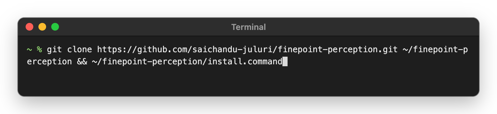
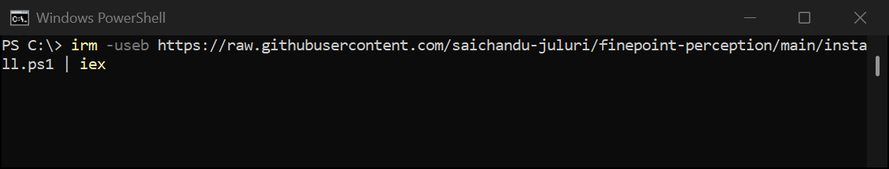
You do not need Terminal or PowerShell again.
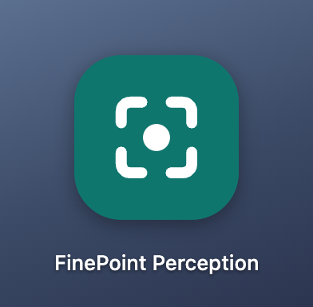
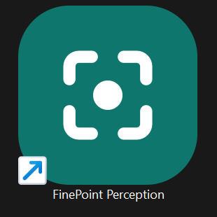
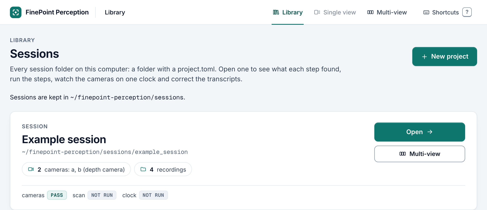
The FinePoint team sends you an email with a set-password link.
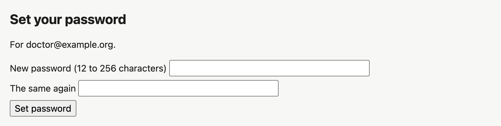
The link works once, and for 72 hours. If it has run out, ask the FinePoint team for a new link.
You sign in on a session's page, under Upload to the cloud, after you make your first project in part 6. You do this once per computer.
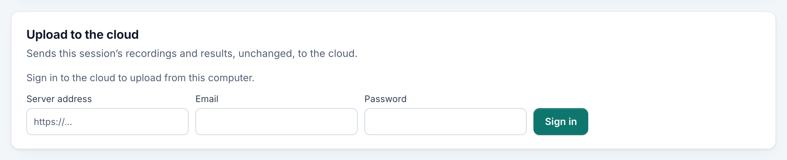
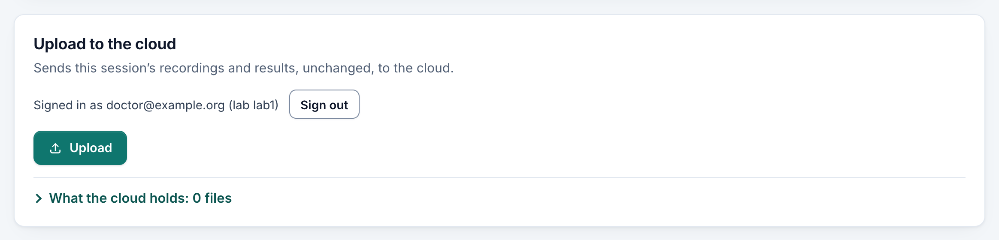
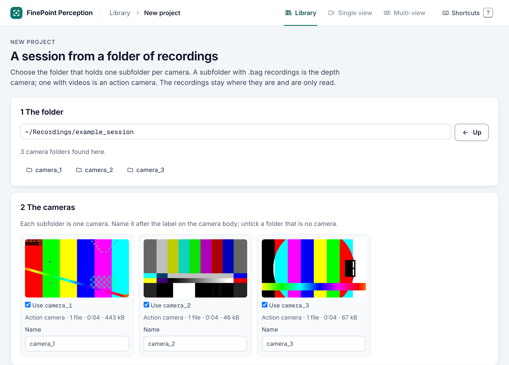
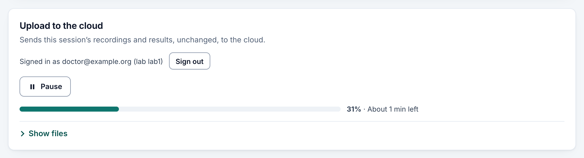
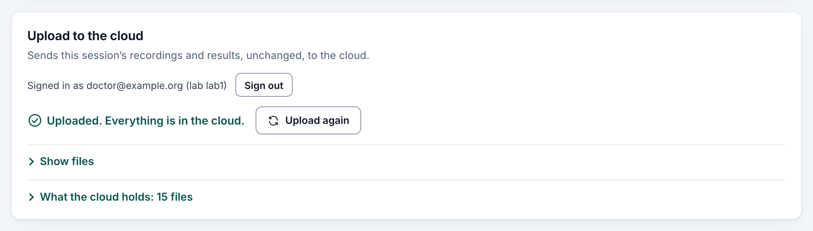
Pause stops the upload, and Resume carries on where it stopped. You can close the browser at any time. After a restart of the computer, click the app's icon and the upload carries on.
The page asks you to sign in again. Sign in again under Upload to the cloud. If you see Sign out, click it first.
The server address changed. Ask the FinePoint team for the new one. Click Sign out, then sign in again with the new address.
Windows stops the install, with red text in PowerShell or a security warning. Send the FinePoint team a screenshot. On a hospital computer, the hospital's IT may need to allow the install first.
Anything else. Send the FinePoint team a screenshot.
When the FinePoint team says there is a new version, update the app as below. It works like the install, and then the app opens in your browser. An upload carries on.
On a Mac, open Terminal, paste this line and press Return.
On Windows, open PowerShell, paste the install line again and press Enter.
The admin page is the server address followed by /admin. Sign in there with your admin account's email and password.
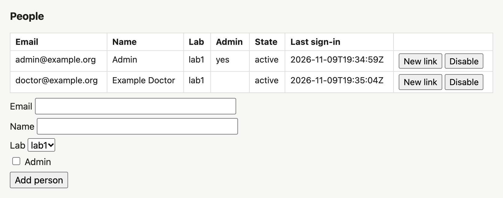
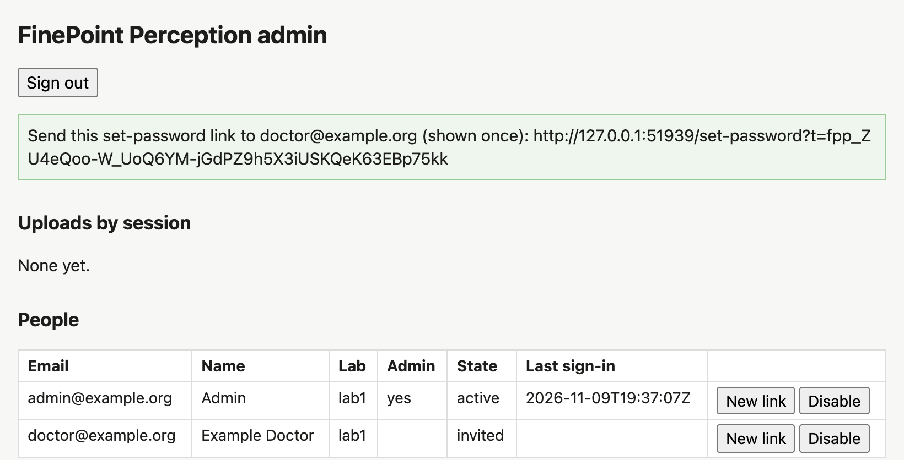
Every link in this guide, in one place.
| Topic | Link |
|---|---|
| The app's project page | FinePoint Perception on GitHubgithub.com/saichandu-juluri/finepoint-perception |
| Does my Mac have an Apple chip? | Mac computers with Apple siliconsupport.apple.com/en-us/116943 |
| Which macOS do I have? | Find out which macOS your Mac is usingsupport.apple.com/en-us/109033 |
| Update macOS | Update macOS on Macsupport.apple.com/en-us/108382 |
| Free space | Free up storage space on Macsupport.apple.com/en-us/102624 |
| Open Terminal | Open or quit Terminal on Macsupport.apple.com/guide/terminal/open-or-quit-terminal-apd5265185d-f365-44cb-8b09-71a064a42125/mac |
| Developer tools | Installing the command-line toolsdeveloper.apple.com/documentation/xcode/installing-the-command-line-tools/ |
| Git (optional, on its own) | Git, install for macOSgit-scm.com/install/mac |
| Which Windows do I have? | Find information about your Windows devicesupport.microsoft.com/en-us/windows/which-version-of-windows-operating-system-am-i-running-628bec99-476a-2c13-5296-9dd081cdd808 |
| Free space on Windows | Free up drive space in Windowssupport.microsoft.com/en-us/windows/experience/storage-filemanagement/free-up-drive-space-in-windows |
| Open PowerShell | Starting Windows PowerShelllearn.microsoft.com/en-us/powershell/scripting/windows-powershell/starting-windows-powershell |
| Git for Windows (not needed) | Git, install for Windowsgit-scm.com/install/windows |
| pixi (the installer adds it) | pixi installationpixi.prefix.dev/latest/installation/ |
| Safari (built in) | Safari User Guide for Macsupport.apple.com/guide/safari/welcome/mac |
| Google Chrome (optional) | Download and install Google Chromesupport.google.com/chrome/answer/95346 |
| Let an app open folders | Control access to files and folders on Macsupport.apple.com/guide/mac-help/control-access-to-files-and-folders-on-mac-mchld5a35146/mac |
You do not need to install anything else by hand. The links are here only if you want to read more.
| Tool | What it is |
|---|---|
| Command line developer tools (Mac) | Apple's free tools. The Mac offers them during the install. Installing the command-line tools |
| Git | On a Mac it comes with the developer tools: Git for macOS. On Windows the installer brings its own; you do not need Git for Windows. |
| pixi | Sets up what the app needs to run. The installer adds it. pixi installation |
| A web browser | The app opens in your browser. Safari is on every Mac, and Microsoft Edge on every Windows PC. Safari guide. Chrome also works: Download Chrome |